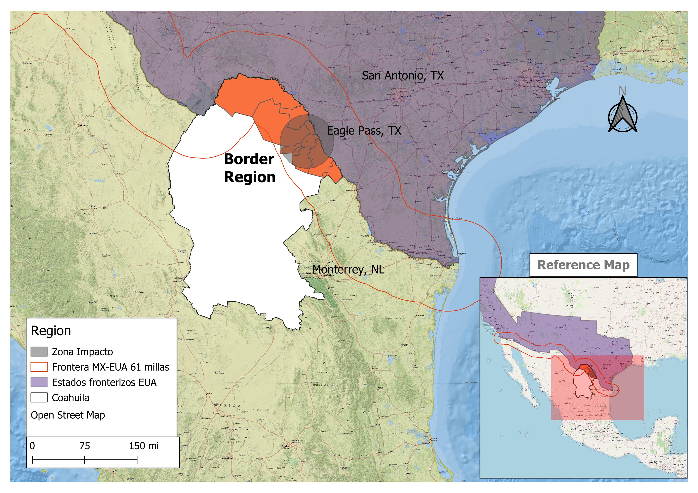

Methods and data sources

-
Main data source: National Health Information System. This is a public-official data repository. It covers patients in all public health institutions. Available at: SINAIS
-
18 years of information startitn at 2004 ending 2022.
-
Definition: According to the Ministry of Health (SSA), a hospital discharge is defined as the release of a patient from the inpatient services of a hospital.
This concept does not include internal transfers—such as moving a patient from one department to another within the same hospital—nor does it include healthy newborns in the same hospital (SINAIS, 2024).
- Geographical coverage: 38 Municipalities and 5 regions within the Coahuila State.
- Border Region. 
- Coal mining Region

- Desert Region

- Laguna Region

- South east Region

- Relative concentration. Spatial comparision using Local Incidence Index as follows:
$$ LII = \dfrac{\left( \dfrac{e_{i}}{\sum_{i=\text{A00}}^{\text{U99}} j} \right)}{\left( \dfrac{e_{i}}{\sum_{i=\text{A00}}^{\text{U99}} N} \right)} $$
Where $$( e_{i} )$$ represents the number of hospital discharges for category i in the range ICD-10 J45.0–J46.x, j indicates a specific state of the country, and N represents the national level of comparison.
This index allows for the evaluation of morbidity conditions in a specific location for a particular illness relative to a reference geographic area, at a specific point in time t
-
Kernel density funtions to explore age distribution of patients across the whole country with confidence intervals.
-
Age adjusted morbidity rates.
Sharing is caring!